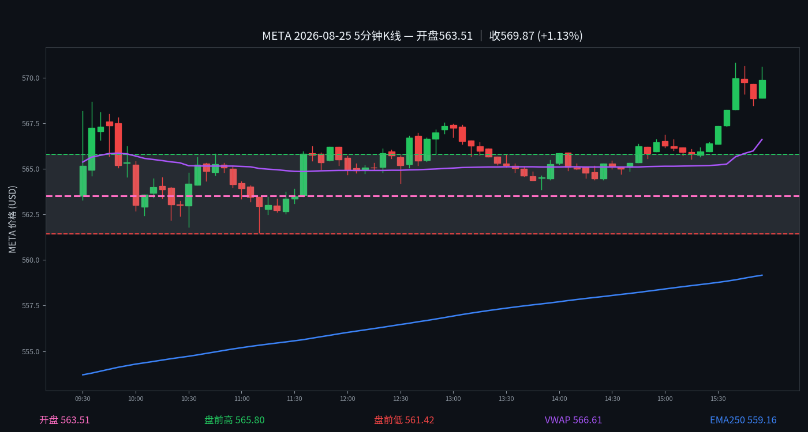

META
META 2026-08-25 周二
569.86 +1.08%
开 563.75 · 高 570.80 · 低 559.02
早盘分析
盘前预测·情况未发生｜发布时间 2026-08-25 07:08 MDT｜#junkman-analysis｜作者 junk_man
META:当前为正 GEX 主导的钉住/均值回归结构，局部正 GEX 绝对占比约 76.2%。
当前价格关系：562 处在 Flip 558.8 的上方、磁吸位 562.5 的区域内。
5 分钟 K 线
K 线：Yahoo Finance
夜航社 heatmap 历史仅保留最近3个交易日，本日无 heatmap 数据；YHS flow 历史从 2026-10-02 起，本日无 flow 数据。

分析总结
开盘563.75，最高570.80，最低559.02，收569.86（+1.08%）。日内振幅11.78点。